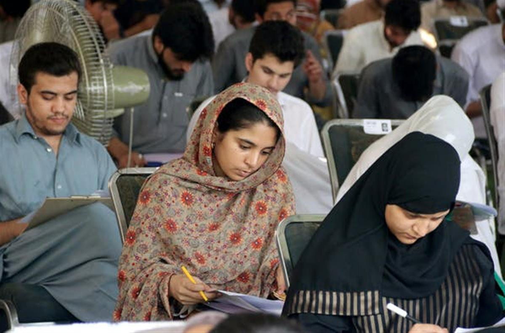

Author
Professor of Education and International Development, UCL
SOURCE: THE CONVERSATION
Universities enrich communities, as well as educating students – new research
October 29, 2020 2.26pm GMT
Education helps us share knowledge, develop understanding, and supports our connection with each other. As the COVID-19 pandemic has continued, governments have been preoccupied with how to re-open schools.
However, there has been more doubt about universities. Discussions about the rise in COVID-19 infections in student populations have often raised the question as to why students are at university at all, running risks for themselves and local populations. These questions often link with views of universities as expensive, elitist – and perhaps not worth it at all.
Together with colleagues, I have conducted research commissioned by the British Council to assess the value provided by higher education. We reviewed 170 research studies published since 2010 on the contribution universities make to societies.
Our survey showed that the value of universities lies not just in the education they provided to students, but in a host of other additional areas. These include expanding the economy, supporting democracy, and advancing equality and sustainability.
The role of universities
We looked in particular at low and lower middle income countries, with a gross national income of below US$4,125 (£3,178) per person. Our research sought to assess the economic, social and political benefits – or disadvantages – universities and other other forms of tertiary education brought to these societies.
The studies we reviewed explored how universities improve knowledge and skills, and how they contribute to economic development and support innovation. They investigated how universities help reduce poverty and create sustainable jobs, and whether they support the needs and rights of groups that have suffered discrimination and exploitation.
We found a number of criticisms of the role universities play in wider society. A recurring point was that universities did not deliver well on goals for social development and inclusion.
Evidence suggests universities can do more to promote gender equality. insta_photos/Shutterstock
Instead, the students enrolled are disproportionately from economic, racial or ethnic elites. Although women make up an increasing proportion of students, there are many allegations of sexual harassment and gender-based violence on campuses.
In some countries, there were complaints that universities did not communicate well with employers or community groups. In some cases, research showed that university planning was not guided by local, national or international needs. It focused on enrolling large numbers of students in poor quality learning environments. Courses were based on standardised learning aims and were out of touch with local contexts.
However, as we surveyed the evidence, the value universities bring to societies became overwhelmingly clear. There is a definite link between the proportion of the population with a university or other higher education qualification and enhanced economic growth.
University education also contributes to sustainable economic development. It provides skills and work opportunities to groups that continue to experience discrimination. This includes members of indigenous minorities, those from scheduled castesin India, and women from a wide range of backgrounds.
Local benefits
Universities bring social and economic benefits on a more local level. In small towns, universities bring investment, jobs and trade. Graduates may help to build up local industries.
University education was linked to a reduction in food poverty. It expands the range of occupations available to people in rural areas. It can assist with accessing information technology.

Students at the University of Engineering and Technology, Pakistan. Asianet-Pakistan/ShutterstockA university education can lead to graduates demanding equality. Some studies show how young people born poor or in excluded groups have gained skills to advocate for their rights, and have gone on to campaign for social change.
Graduates contribute to health, education and peace building. They assist civil society organisations in holding governments to account. Initiatives like internships foster better connections between government departments and civil society organisations.
The teaching and learning style associated with universities – focused on discussion, evaluation and critical thinking – also led to wider gains. It has been shown to support better teaching in schools, more understanding about epidemics like HIV, and improved knowledge about confronting corruption. Other benefits include a link between higher education and improved recovery from conflict.
Without doubt, university teaching, research or community service could be improved. But running through these studies is evidence that university education, if well delivered, can help overcome political, economic, social and cultural divisions.
As the pandemic has progressed, we have looked to universities for their expertise on vaccines, treatments and assessments of risk. But this research suggests they will have additional potential in helping societies to recover from the effects of COVID-19. They help people think about how our lives interconnect, and how our skills can be useful to each other.
Unfortunately, COVID-19 is unlikely to be the last global crisis we will confront. University education cannot prevent crises from happening. But it has a crucial role to play in responding to global challenges and helping people prepare better and support each other through periods of hardship, loss and uncertainty.
SOURCE: THE CONVERSATION